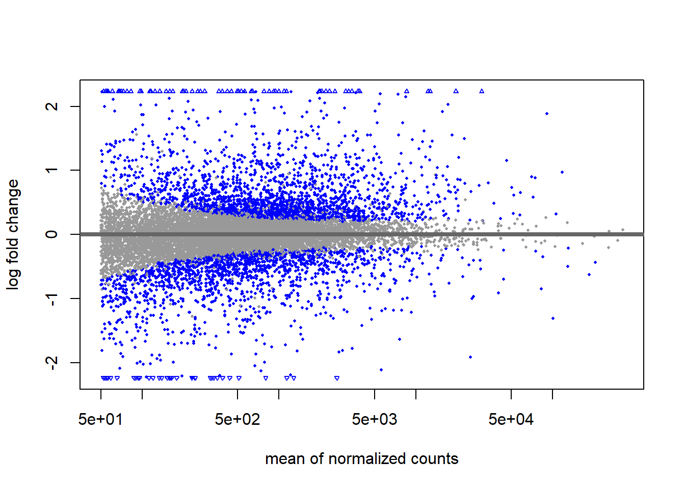
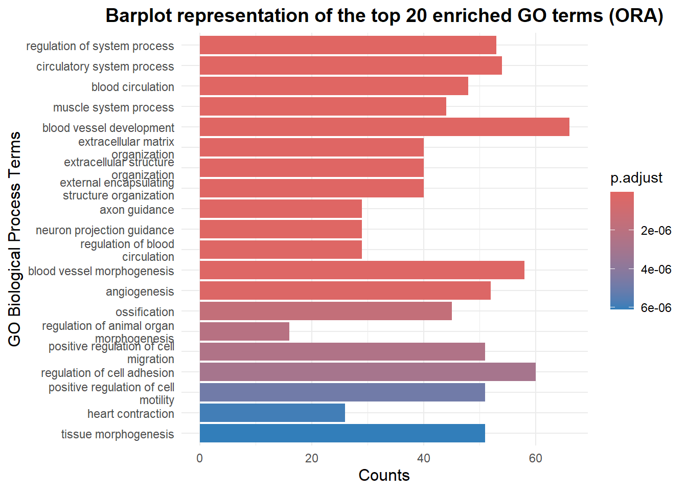
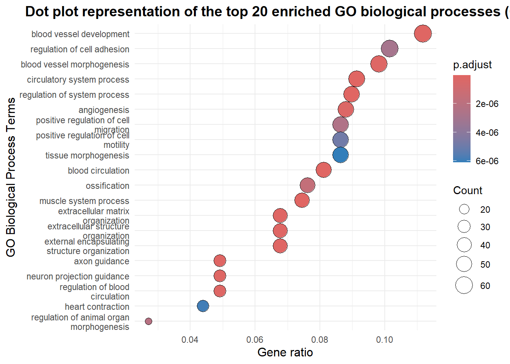
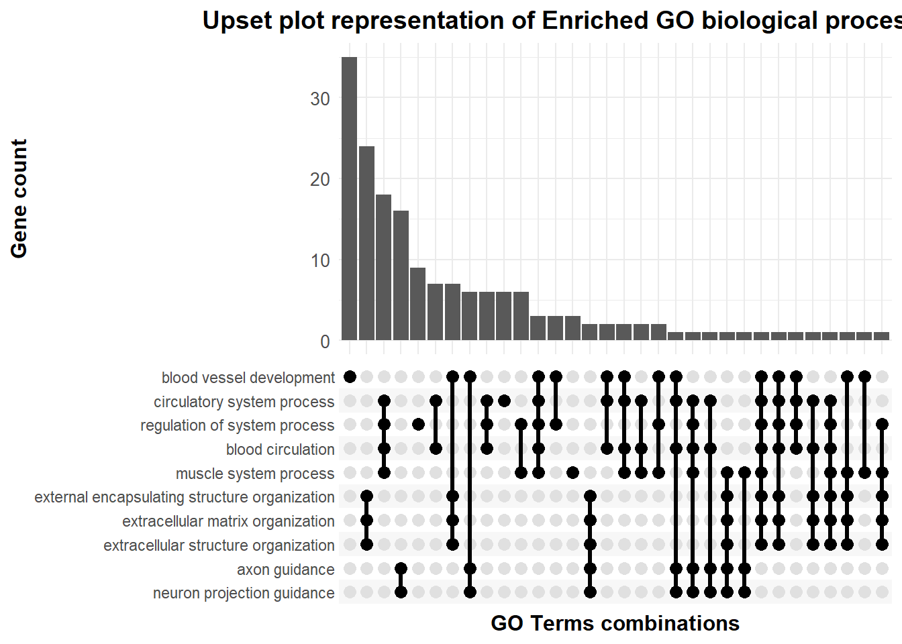
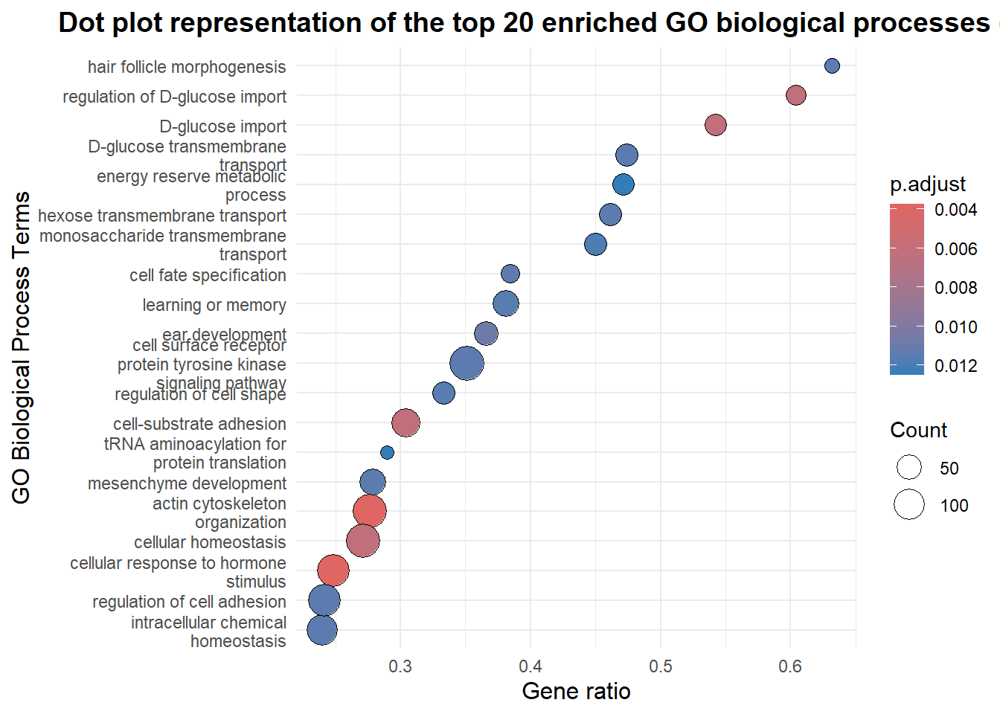
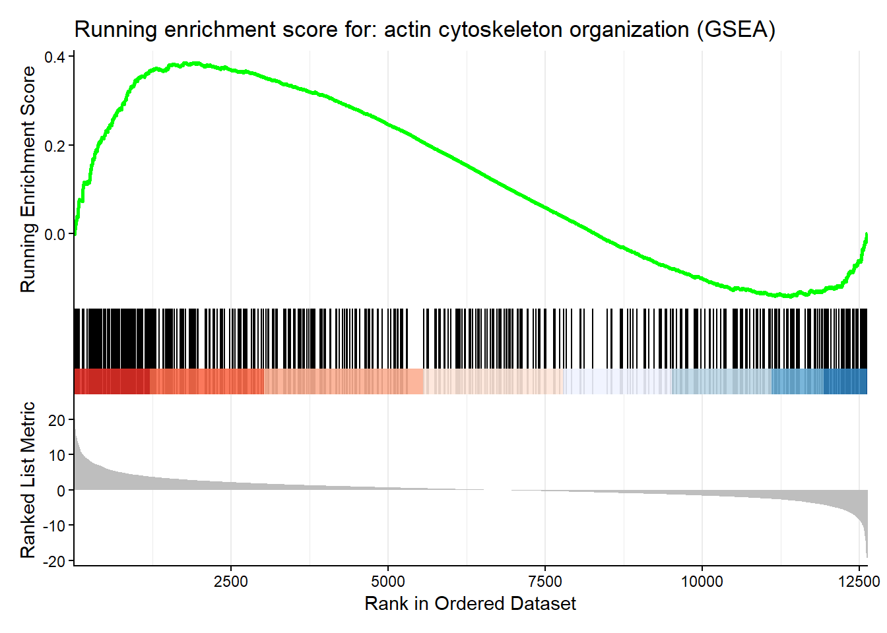
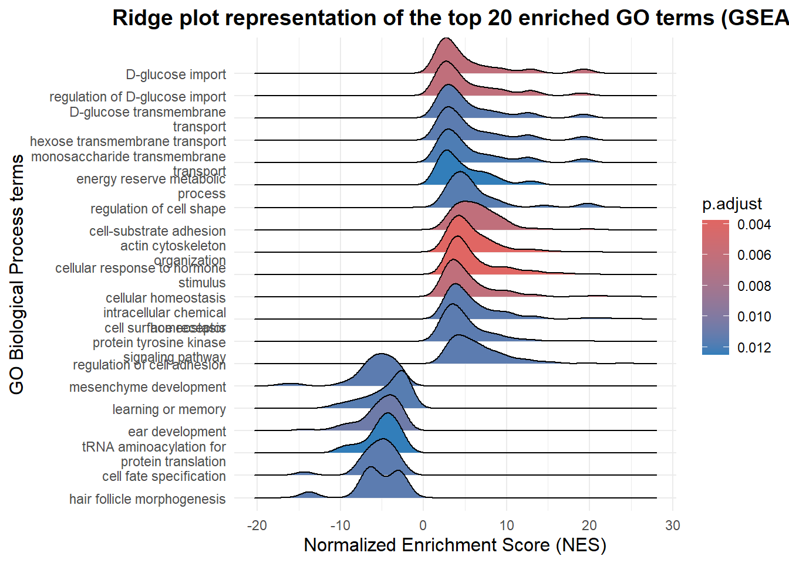

if (!requireNamespace("BiocManager", quietly = TRUE))
install.packages("BiocManager")
#required packages
cran_pkgs <- c("tidyverse", "ggplot2", "ggupset")
bioc_pkgs <- c("airway", "DESeq2", "clusterProfiler",
"AnnotationDbi", "org.Hs.eg.db", "enrichplot")
#install missing CRAN packages
missing_cran <- setdiff(cran_pkgs, rownames(installed.packages()))
if (length(missing_cran)) install.packages(missing_cran)
#install missing Bioconductor packages
missing_bioc <- setdiff(bioc_pkgs, rownames(installed.packages()))
if (length(missing_bioc)) BiocManager::install(missing_bioc)Tutorial GO enrichment and GSEA
0.1 Installing and loading necessary packages
library(airway) #dataset
library(tidyverse)
library(ggplot2)
library(DESeq2) #differential expression
library(clusterProfiler) #GO enrichment and GSEA
library(AnnotationDbi) #will run in the background to retrieve annotations
library(org.Hs.eg.db) #for GO IDs for humans
library(enrichplot) #package for enrichment results visualization
library(ggupset) #needed for the uspet plot1 Tutorial ORA and GSEA (using GO)
When performing (single-cell) RNA-Seq experiments, the aim is to investigate gene expression in the sample of interest. It can often be of interest to compare gene expression between different samples: different conditions (e.g. times series or treatment) or different cell types, lineages… The purpose of functional enrichment analysis is to explore and compare the variation in gene expression between the samples or conditions studied and relate it to the biological question of interest.
Prior to performing functional enrichment, the data needs to be preprocessed and, if in the case of single-cell RNA-Seq, the different cell types must be identified. Once the data is ready, the first step of the workflow is to perform Differential Expression (DE) analysis to assess, for each gene, how much the expression varies between the two conditions or samples of interest. This analysis will give an output often containing thousands of genes, hence can be difficult to interpret and relate to the biological question. The goal of functional enrichment is to make sense of this output by linking the genes back to processes or pathways they are involved in, location in the cell…, i.e. information that is more intuitive and easily interpretable. Several methods can be used, and we will in this tutorial present and illustrate two complementary approaches:
Over-Representation Analysis (ORA)
Gene-Set Enrichment Analysis (GSEA)
Both techniques test whether specific biological terms, pathways, or functions are statistically enriched (or over-represented) among the genes showing important variation in expression between the conditions or samples of interest. By connecting gene names to interpretable and understandable biological concepts, these analyses help transform a long list of DE genes into biological insights.
Several gene annotations (pathways, ontologies…) can be used for such purpose. In this tutorial, we will focus on Gene Ontology (GO), a standardized representation that describes gene attributes across all species. It is organized into 3 categories : Biological Process, Molecular Function and Cellular Component. We will here focus on Biological Process, the most common category.
1.1 Loading data
In this tutorial, we use the airway package containing RNA-Seq data published by Himes et al., 2014.
The dataset has already been preprocessed and normalized, making it ready for differential expression (DE) analysis.
It is composed of transcriptomic profiles from four primary human airway smooth muscle cell lines derived from patients suffering from lung inflammation. For each cell line, two treatment conditions were analysed:
Untreated (control)
Treated with 1 µM dexamethasone for 18 hours. Dexamethasone is a synthetic glucocorticoid commonly used to suppress inflammation
Our aim will therefore be to investigate which biological processes are affected by the dexamethasone treatment, by comparing the treated samples to the baseline untreated samples.
data("airway")
airwayclass: RangedSummarizedExperiment
dim: 63677 8
metadata(1): ''
assays(1): counts
rownames(63677): ENSG00000000003 ENSG00000000005 ... ENSG00000273492
ENSG00000273493
rowData names(10): gene_id gene_name ... seq_coord_system symbol
colnames(8): SRR1039508 SRR1039509 ... SRR1039520 SRR1039521
colData names(9): SampleName cell ... Sample BioSampleThe airway package provides a RangedSummarizedExperiment object. From this object, we will extract the two elements required for differential expression analysis and the subsequent ORA and GSEA (Note: if your dataset comes in a different format, you might need to adapt the extraction accordingly):
The count matrix containing all gene counts for each sample (each row corresponds to a gene, each column corresponds to a sample)
The sample metadata providing contextual information for each sample: its origin (here which cell line) and the condition (here treated or untreated)
This extraction step was inspired from https://github.com/kpatel427/YouTubeTutorials/blob/main/getData.R
#count matrix (countsData)
countsData <- assay(airway)
#sample information (colData)
colData <- as.data.frame(colData(airway))
colData <- colData[,c(2,3)] #extracting metadata of interest: cell line and treatment condition
colData$dex <- gsub('trt', 'treated', colData$dex) #renaming values
colData$dex <- gsub('untrt', 'untreated', colData$dex) #renaming values
names(colData) <- c('cellLine', 'dexamethasone') #renaming columnsWe can now visualize our two inputs and ensure that the data has been correctly extracted:
The count matrix should display gene IDs as rows and sample as columns, with each entry representing the raw count of reads mapped to a given gene in a given sample
The sample metadata should show one row per sample and contain information about its cell line and treatment condition
head(countsData) SRR1039508 SRR1039509 SRR1039512 SRR1039513 SRR1039516
ENSG00000000003 679 448 873 408 1138
ENSG00000000005 0 0 0 0 0
ENSG00000000419 467 515 621 365 587
ENSG00000000457 260 211 263 164 245
ENSG00000000460 60 55 40 35 78
ENSG00000000938 0 0 2 0 1
SRR1039517 SRR1039520 SRR1039521
ENSG00000000003 1047 770 572
ENSG00000000005 0 0 0
ENSG00000000419 799 417 508
ENSG00000000457 331 233 229
ENSG00000000460 63 76 60
ENSG00000000938 0 0 0head(colData)For the subsequent analysis, we need to make sure that the column names present in the count matrix match the row names of the sample metadata, and in the same order.
all(colnames(countsData) %in% rownames(colData))[1] TRUEall(colnames(countsData) == rownames(colData))[1] TRUEOur data is now ready to be used for differential expression analysis.
1.2 Differential Expression (DE) analysis
1.2.0.1 Preparing data for DE analysis
DE analysis aims to statistically assess differences in gene expression between two samples or conditions, and we will use it to determine which genes might be significantly overexpressed or underexpressed in our two treatment conditions: treated vs untreated.
For this step, we use the DESeq2 package (Love et al., 2014).
First, we need to create the DESeqDataSet object, the main input for the DESeq() function. We do this using the DESeqDataSetFromMatrix() function, where we specify :
The count matrix (
countsData)The sample information (
colData)The experimental design, which specifies the two samples or conditions we want to compare in the model. Here, we want to compare the gene expression between the two treatment conditions while also accounting for potential variability between the four cell lines.
dds <- DESeqDataSetFromMatrix(countData = countsData, #count matrix
colData = colData, #sample information
design = ~ cellLine + dexamethasone) #design: cell line and treatment conditionWarning in DESeqDataSet(se, design = design, ignoreRank): some variables in
design formula are characters, converting to factorsddsclass: DESeqDataSet
dim: 63677 8
metadata(1): version
assays(1): counts
rownames(63677): ENSG00000000003 ENSG00000000005 ... ENSG00000273492
ENSG00000273493
rowData names(0):
colnames(8): SRR1039508 SRR1039509 ... SRR1039520 SRR1039521
colData names(2): cellLine dexamethasoneOptional step: Filtering lowly expressed genes. Transcriptomics data can be very large, with tens of thousands of expressed genes. In order to increase computation speed and improve robustness, we might want to filter some genes that are very lowly expressed across all samples.
In this tutorial, we will remove genes whose total expression across all samples is less than 10 counts.
dds <- dds[rowSums(counts(dds)) >= 10,] #summing expression across all samples and selecting counts > 10
ddsclass: DESeqDataSet
dim: 22369 8
metadata(1): version
assays(1): counts
rownames(22369): ENSG00000000003 ENSG00000000419 ... ENSG00000273487
ENSG00000273488
rowData names(0):
colnames(8): SRR1039508 SRR1039509 ... SRR1039520 SRR1039521
colData names(2): cellLine dexamethasoneFrom 63677 genes, we filtered the data down to 22369 with this step, i.e. we removed over 40000 genes. This will be helpful to speed up our analysis.
DE analysis aims to compare gene expression between samples or conditions. We usually want to compare one or several conditions to a baseline, which we need to explicitly define. Indeed, the algorithm will by default proceed alphabetically and choose the first condition as baseline (so in our case ‘treated’, while we want our baseline to be ‘untreated’).
We therefore use the relevel() function to manually specify the baseline/reference we want to use.
dds$dexamethasone <- relevel(dds$dexamethasone, ref = "untreated")Note: If you have any technical replicates in your analysis (i.e. multiple sequencing runs), you will need to collapse them before running DE analysis. Technical replicates have to be combined because they do not represent independent biological variation. On the contrary, biological replicates must not be collapsed (like in our case). For this, you can use the collapseReplicates() function: you can fin more information here https://rdrr.io/bioc/DESeq2/man/collapseReplicates.html
1.2.0.2 Running DE analysis
We can now run the DE analysis on our DESeqDataSet object (dds) with the function DESeq(). We then extract the results using the results() function. For the latter, need to specify two key parameters:
The significance level (
alpha) at which a gene is considered differentially expressed between conditions, here we use alpha = 0.05. By defaults, significance is assessed on the adjusted p-values, corrected for multiple testing with the Benjamini-Hochberg correctionThe contrast, i.e. which groups we want to compare in our analysis. It determines the direction of the log2 fold changes. Here, we need to choose the comparison we want to analyse. We previously defined our design when creating our
ddsobject as~ cellLine + dexamethasone. This means that DESeq models both the treatment condition and cell line effect. We can verify the different comparison performed with theresultsNames()function. Here, we are most interested in the difference in gene expression between our two treatment conditions, hence we will contrast, in our treatment (dexamethasone) column, the treated and untreated samples.
dds <- DESeq(dds) #running DE analysisestimating size factorsestimating dispersionsgene-wise dispersion estimatesmean-dispersion relationshipfinal dispersion estimatesfitting model and testingresultsNames(dds) #printing the different comparisons performed by DESeq()[1] "Intercept" "cellLine_N061011_vs_N052611"
[3] "cellLine_N080611_vs_N052611" "cellLine_N61311_vs_N052611"
[5] "dexamethasone_treated_vs_untreated"res <- results(dds, #extract results
alpha = 0.05, #set significance threshold
contrast = c("dexamethasone", "treated", "untreated")) #set contrast
reslog2 fold change (MLE): dexamethasone treated vs untreated
Wald test p-value: dexamethasone treated vs untreated
DataFrame with 22369 rows and 6 columns
baseMean log2FoldChange lfcSE stat pvalue
<numeric> <numeric> <numeric> <numeric> <numeric>
ENSG00000000003 708.5979 -0.3812271 0.1007023 -3.785684 1.53286e-04
ENSG00000000419 520.2963 0.2068404 0.1121077 1.845014 6.50354e-02
ENSG00000000457 237.1621 0.0379543 0.1428231 0.265744 7.90437e-01
ENSG00000000460 57.9324 -0.0885309 0.2849344 -0.310706 7.56024e-01
ENSG00000000971 5817.3108 0.4264246 0.0888056 4.801775 1.57266e-06
... ... ... ... ... ...
ENSG00000273483 2.68955 0.849208 1.253365 0.6775423 0.498062
ENSG00000273485 1.28646 -0.123613 1.588251 -0.0778298 0.937963
ENSG00000273486 15.45244 -0.150429 0.482098 -0.3120292 0.755018
ENSG00000273487 8.16327 1.045639 0.693057 1.5087349 0.131367
ENSG00000273488 8.58437 0.108946 0.632300 0.1723006 0.863201
padj
<numeric>
ENSG00000000003 1.22779e-03
ENSG00000000419 1.87583e-01
ENSG00000000457 9.04243e-01
ENSG00000000460 8.86519e-01
ENSG00000000971 1.96467e-05
... ...
ENSG00000273483 NA
ENSG00000273485 NA
ENSG00000273486 0.886086
ENSG00000273487 0.312660
ENSG00000273488 0.939628summary(res)
out of 22369 with nonzero total read count
adjusted p-value < 0.05
LFC > 0 (up) : 2208, 9.9%
LFC < 0 (down) : 1822, 8.1%
outliers [1] : 0, 0%
low counts [2] : 5204, 23%
(mean count < 6)
[1] see 'cooksCutoff' argument of ?results
[2] see 'independentFiltering' argument of ?resultsThe results of the DE analysis show, for each gene:
The mean of the normalised count over all samples
The Log2 Fold Change, which represents the gene expression in the treated over untreated condition
The Standard Error of the Log2 Fold Change, which estimates the uncertainty of the Log2 Fold Change (e.g. which might be high because of few replicates, low gene counts or a high dispersion)
The Wald statistic (stat), which compares the Log2 Fold Change to its Standard Error to evaluate whether there is a gene effect or whether it is just noise. A high Wald statistic value indicates that the gene probably has an effect
The p-value, which assesses the probability of obtaining this Wald statistic value under the null hypothesis
The adjusted p-value, which corrects the p-values for multiple testing using the Benjamini-Hochberg correction by default. This adjusted p-value will be compared to the significance level ‘alpha’ previously chosen in order to identify significantly Differentially Expressed Genes (DEGs)
Before performing enrichment analysis, we perform some basic filtering of our differential expression results:
- We first remove the genes with missing Log2 Fold Change (
NA), which can’t be analysed in the subsequent ORA and GSEA. However, those genes might showNAbecause there are solely expressed in one condition. To avoid loosing all information about these genes, we save them in another object,res_NA, in case we want to go back to them later - We then filter out the genes presenting a low average normalised count (
baseMean) across all samples. Indeed, lowly expressed genes might bias the subsequent ORA and GSEA, biasing p-value estimation because of small changes that, after normalization compared to higher-expressed genes, might falsely appear significant
res_NA <- res[is.na(res$log2FoldChange), ] #saving genes with NA log2 fold change
res <- na.omit(res) #excluding missing values
res <- res[res$baseMean > 50,] #filtering lowly expressed genes1.2.0.3 Visualization of DE results
We will visualize the results of the DE analysis using a MA plot. It displays the Log2 Fold Change of each gene between the two conditions studied, against the average normalized count (on a log scale). Genes that are significantly differentially expressed, according to the chosen alpha parameter, are colored in blue, making it easy to identify genes with strong expression variation.
plotMA(res)
Now that we have performed our DE analysis, we want to be able to interpret this variation in gene expression and will perform functional enrichment.
1.3 Over-Representation analysis (ORA)
Over-Representation Analysis (ORA) is a functional enrichment analysis which aims to identify biological concepts (ontologies, pathways…) that are enriched (i.e. over-represented) in the gene set of interest. In our case, it will allow us to identify which terms or pathways are significantly altered in our treated samples vs untreated.
To that aim, ORA will investigate the terms, here GO terms, associated to each gene from the gene set of interest and identify GO terms that are significantly enriched as compared to a background gene set using a Hypergeometric test.
1.3.0.1 DEGs identification
ORA takes as an input a list of differentially expressed genes (DEGs), i.e. considered significantly differentially expressed by the previous DE analysis. We will therefore select the genes which had an adjusted p-value (i.e. corrected for multiple testing) < 0.05. Additionally, we also, for safety, want to make sure that the absolute log2 fold change between our two conditions is greater than 1.
degs <- subset(res, padj < 0.05 & abs(log2FoldChange) > 1) #identifying DEGs
nrow(degs)[1] 676head(degs)log2 fold change (MLE): dexamethasone treated vs untreated
Wald test p-value: dexamethasone treated vs untreated
DataFrame with 6 rows and 6 columns
baseMean log2FoldChange lfcSE stat pvalue
<numeric> <numeric> <numeric> <numeric> <numeric>
ENSG00000003402 2546.6093 1.19047 0.121019 9.83706 7.79593e-23
ENSG00000004799 914.3706 2.64496 0.628583 4.20781 2.57854e-05
ENSG00000006283 62.9599 -1.46590 0.284586 -5.15097 2.59147e-07
ENSG00000007237 427.0041 -1.40472 0.189864 -7.39859 1.37637e-13
ENSG00000008256 3716.5654 1.18342 0.103673 11.41491 3.52255e-30
ENSG00000008311 721.9414 1.09573 0.107983 10.14724 3.40880e-24
padj
<numeric>
ENSG00000003402 6.28250e-21
ENSG00000004799 2.50911e-04
ENSG00000006283 3.75381e-06
ENSG00000007237 4.64151e-12
ENSG00000008256 4.58065e-28
ENSG00000008311 3.09588e-22genes <- rownames(degs) #extracting DEG namesAfter filtering, 676 genes have been identified as DEGs and will serve as our input for ORA.
1.3.0.2 Running ORA
We now run ORA using the enrichGO() function from clusterProfiler package (Yu et al., 2012 & 2024; Wu et al., 2021; Xu et al., 2024). This function requires several inputs:
The DEGs list from the previous step
The Organism Annotation Database (
OrgDb), which links gene IDs to annotations from GO. Here, we choose"org.Hs.eg.db"as we work for human data. When working with mouse data, choose"org.Mm.eg.db". For other organisms, you might have to convert it more manually (you can find more information here : https://geneontology.org/docs/download-go-annotations/)The background set to which your DEGs will be compared to, here all genes outputted by the DE analysis (both significant and non-significant)
The type of gene ID we have in our dataset:
"ENSEMBL"for ensembl IDs,"SYMBOL"for gene symbol or"ENTREZ"for gene entriesThe ontology desired, i.e. one of the three GO categories: Biological Process (
"BP"), most frequently used, Molecular Function ("MF") or Cellular Component ("CC"). We will here use"BP".The p-value cutoff used to determine significance. We will use the default 0.05
The correction applied for multiple testing. We will use the default Benjamini-Hochberg (BH)
GO_res <- enrichGO(gene = genes, #gene list
OrgDb = "org.Hs.eg.db", #organism
universe = rownames(res), #background set
keyType = "ENSEMBL", #type of gene IDs
ont = "BP", #ontology of interest
pvalueCutoff = 0.05, #significance cutoff
pAdjustMethod = "BH" #correction for multiple testing
)
head(as.data.frame(GO_res))After running ORA, we obtain a table that summarizes different characteristics of the enriched GO terms:
ID: GO term identifier
Description: the description of the GO term (based on the chosen ontology category)
Gene ratio: the ratio of DEGs belonging to the GO term vs the total number of DEGs
BgRatio: the ratio of all genes belonging to the GO term (in the background set) vs the total number of genes in the background set, which gives an indication of how “rare” the GO term is
RichFactor: the magnitude of enrichment calculated as GeneRatio/BgRatio
FoldEnrichement: the enrichment fold change
zScore: the direction of the enrichement
pvalue: the raw p-value for enrichment
p.adjust : the ajusted p-value corrected for multiple testing with the chosen correction
qvalue : the False Discovery Rate
GeneID: the IDs of genes in the DEGs list that map to the GO term
Count: the number of DEGs associated with the GO term
1.3.0.3 Visualizations for ORA results
To interpret enrichment results, it is useful to visualize them. For this, the enrichplot package provides several visualization methods that can be applied to both ORA and GSEA results (Yu et al., 2025)
The bar plot : an overview of most enriched GO terms
The most commonly used method for visualization is the bar plot. It gives a quick overview of the most significant enriched terms.
You can customize it to display either p-values, gene counts or gene ratios on the x-axis. The showCategory parameter allows you to indicate how many top GO terms (i.e. most enriched) to display in the plot. The bar plot is additionally coloured according to the GO term’s adjusted p-value.
barplot(GO_res,
showCategory = 20, #number of GO terms to display
title = "Barplot representation of the top 20 enriched GO terms (ORA)",
font.size = 10,
color = "p.adjust" #colour according to p-value
) +
xlab("Counts") +
ylab("GO Biological Process Terms") +
theme_minimal() +
theme(
plot.title = element_text(hjust = 0.5, face = "bold", size = 14),
axis.title = element_text(size = 12))
The dot plot : a more detailed overview of most enriched GO terms
Another well-used visualization method is the dot plot. It shows similar information as the bar plot but with an additional characteristic: the count (number of DEGs associated with the GO term) as dot size.
dotplot(GO_res,
showCategory = 20,#number of GO terms to display
title = "Dot plot representation of the top 20 enriched GO biological processes (ORA)",
font.size = 10) +
xlab("Gene ratio") +
ylab("GO Biological Process Terms") +
theme_minimal() +
theme(
plot.title = element_text(hjust = 0.5, face = "bold", size = 14),
axis.title = element_text(size = 12))
The upset plot : complex association
We can visualize complex association between genes and GO terms using the upset plot, which helps to show which genes are shared across multiple GO terms and is particularly useful for large enrichment results.
library(ggupset)
upsetplot(GO_res) +
ggtitle("Upset plot representation of Enriched GO biological processes (ORA)") +
xlab("GO Terms combinations") +
ylab("Gene count")+
theme_minimal()+
theme(
plot.title = element_text(hjust = 0.5, face = "bold", size = 14),
axis.title = element_text(face = "bold", size = 12),
axis.text = element_text(size = 10),
axis.text.x = element_text(angle = 45, hjust = 1))
Using those visualizations and the table of enriched GO terms, you can them relate them back to your biological question and interpret your results using your knowledge and the literature.
1.4 Gene-Set Enrichment Analysis (GSEA)
Gene Set Enrichment Analysis (GSEA) is another functional enrichment analysis which also aims to identify biological concepts (ontologies or pathways) that are enriched in the gene set of interest. However, GSEA is directional: for each significantly enriched term, it will precise whether the term is up-regulated or down-regulated in our sample of interest. Here, which terms are up-regulated or down-regulated in the treated sample vs untreated sample.
To that aim, GSEA will, for each GO term of interest, calculate an Enrichment Score (ES) which will describe where in the ranked gene set of interest (outputted by the DE analysis) the term is most enriched. This ES will then be compare to the ES distribution obtained from randomly permuting gene labels in order to assess significance. As an output, we will obtain significantly enriched GO term at the top of the gene list (i.e. up-regulated) or at the bottom of the gene list (i.e. down-regulated).
1.4.0.1 Ranked gene list for GSEA
In contrast to ORA, GSEA takes as input the list of all output genes from the DE analysis, significant or not, to detect changes.
Genes are ranked according to the Wald statistic, which represents the log2 fold change in gene expression normalized by its error. This statistic underlies the calculation of the p-value to assess significance. We therefore expect genes that are up-regulated in the treated sample vs untreated to be at the top of the list, and the down-regulated genes at the bottom of that list (there is no notion of significance here).
We will therefore rank all genes outputted from DESeq and create an input object with the ranked Wald statistic (stat) and corresponding gene name, to serve as an input for GSEA.
res_ranked <- res[order(res$stat, decreasing = TRUE),] #ranking data by decreasing Wald statistic
head(res_ranked)log2 fold change (MLE): dexamethasone treated vs untreated
Wald test p-value: dexamethasone treated vs untreated
DataFrame with 6 rows and 6 columns
baseMean log2FoldChange lfcSE stat pvalue
<numeric> <numeric> <numeric> <numeric> <numeric>
ENSG00000152583 997.445 4.57497 0.184241 24.8314 4.11067e-136
ENSG00000165995 495.096 3.29110 0.133053 24.7353 4.46338e-135
ENSG00000120129 3409.038 2.94785 0.121876 24.1872 3.03384e-129
ENSG00000101347 12703.413 3.76702 0.155992 24.1488 7.68266e-129
ENSG00000189221 2341.781 3.35365 0.142181 23.5872 5.21271e-123
ENSG00000211445 12285.700 3.73044 0.166398 22.4187 2.58506e-111
padj
<numeric>
ENSG00000152583 7.05596e-132
ENSG00000165995 3.83070e-131
ENSG00000120129 1.73586e-125
ENSG00000101347 3.29682e-125
ENSG00000189221 1.78952e-119
ENSG00000211445 7.39542e-108genes <- res_ranked$stat #Wald statistic (ranked)
names(genes) <- rownames(res_ranked) #corresponding gene name
head(genes)ENSG00000152583 ENSG00000165995 ENSG00000120129 ENSG00000101347 ENSG00000189221
24.83137 24.73530 24.18720 24.14882 23.58722
ENSG00000211445
22.41872 1.4.0.2 Running GSEA
Once the ranked gene list is prepared, we can perform GSEA using gseGO() function from clusterProfiler.
The gseGO() function computes an enrichment score (ES) which asses where in the ranked gene set the GO term’s genes are most concentrated. This ES is then normalized (NES) to account for gene set size. To avoid division-by-zero or instability when computing the enrichment score normalization, a small positive value is added (eps). This ensure reproducibility without affecting the biological interpretation.
Once the enrichment score are obtained, significance is assessed by comparing the ES to the enrichment score distribution obtained from randomly permuting gene labels. The significance level is set by the parameter pvalueCutoff. Finally, the correction applied for multiple testing can be specified by the parameter pAdjustMethod.
The output shows a list of significantly enriched GO terms, either up-regulated (enriched at the top) or down-regulated (enriched at the bottom) in the ranked gene list.
class(genes)[1] "numeric"gse <- gseGO(geneList = genes, #gene list
OrgDb = org.Hs.eg.db,#organism
keyType = "ENSEMBL", #type of gene IDs
ont = "BP", #ontology of interest
eps = 1e-10, #default value of epsilon
pvalueCutoff = 0.05, #significance cutoff
pAdjustMethod = "BH" #correction for multiple testing
)Warning in preparePathwaysAndStats(pathways, stats, minSize, maxSize, gseaParam, : There are ties in the preranked stats (0.02% of the list).
The order of those tied genes will be arbitrary, which may produce unexpected results.head(as.data.frame(gse))1.4.0.3 Visualizations for GSEA results
Dot plot : an overview of most enriched GO terms
In the case of GSEA, the barplot() is not intended for GSEA objects. It is more common to visualize the results using dotplot() to have a overview of the results. The dotplot will display the most enriched GO terms (whether they are up-regulated or down-regulated) but not display information about the direction of the enrichment.
dotplot(gse,
showCategory = 20,
title = "Dot plot representation of the top 20 enriched GO biological processes (GSEA)",
font.size = 10) +
xlab("Gene ratio") +
ylab("GO Biological Process Terms") +
theme_minimal() +
theme(
plot.title = element_text(hjust = 0.5, face = "bold", size = 14),
axis.title = element_text(size = 12))
The running enrichment score plot : visualizing enrichment for a selected GO term
To visualize how genes contribute to the enrichment of one GO term of focus, we can plot the running enrichment score (ES) along the ranked gene list. This plot shows where the genes associated with the selected GO term are located (top or bottom) within the ranked list.
The peak value for the the running curve represents the ES for the selected GO term, i.e. if the peak is near the top of the ranked list, genes contributing to this term are mostly up-regulated, while if the peak is near the bottom of the ranked list, they are mostly down-regulated.
Here, we used the first GO term “cellular response to hormone stimulus” as an example.
term <- gse$Description[1]
gseaplot2(gse,
geneSetID = gse$ID[1],
title = paste("Running enrichment score for:", term, "(GSEA)"))
The ridge plot : enrichment results across multiple GO terms
The ridge plot is a good way to visualize the distribution of enrichment scores across the top enriched GO terms. It highlights both the direction (up/down regulation) and significance of the enrichment for multiple GO terms.
ridgeplot(gse, showCategory = 20) +
ggtitle("Ridge plot representation of the top 20 enriched GO terms (GSEA)") +
xlab("Normalized Enrichment Score (NES)") +
ylab("GO Biological Process terms") +
theme_minimal() +
theme(
plot.title = element_text(hjust = 0.5, face = "bold", size = 14),
axis.title = element_text(size = 12)
)Picking joint bandwidth of 1.09
As for ORA, you can use those visualizations and the table of enriched GO terms to relate them back to your biological question and interpret your results using your knowledge and the literature.
If you are interested in more visualization methods, you can find additional information here : https://yulab-smu.top/biomedical-knowledge-mining-book/enrichplot.html
1.5 Conclusion
In this tutorial, we presented how to perform functional enrichment analysis on RNA-Seq data using GO terms with two analysis: Over-Representation Analysis and Gene Set Enrichment Analysis. These analysis are often combined as they have subtle differences that make them complementary. While ORA is an intuitive and computationally fast method, GSEA is a harder to implement but more sensitive technique which provides more detailed information. Indeed, it is a directional analysis, i.e. precises whether a term is up-regulated or down-regulated. Moreover, since it inputs all the genes present in the data without defining a cutoff for significantly differentially expressed genes, it can be more sensitive to small changes that might get unnoticed in ORA. It can therefore be useful to combine both analysis and compare the outputs. This tutorial only presents two functional enrichment analysis, using one ontology, and you might want to explore other enrichment methods, e.g. pathway enrichment analysis, or ontologies, e.g. Disease Ontology or Medical Subset Heading, to further target our analysis to your dataset and biological question.
1.6 References Table
Himes, B. E., Jiang, X., Wagner, P., Hu, R., Wang, Q., Klanderman, B., Whitaker, R. M., Duan, Q., Lasky-Su, J., Nikolos, C., Jester, W., Johnson, M., Panettieri, R. A., Tantisira, K. G., Weiss, S. T., & Lu, Q. (2014). RNA-Seq Transcriptome Profiling Identifies CRISPLD2 as a Glucocorticoid Responsive Gene that Modulates Cytokine Function in Airway Smooth Muscle Cells. PLoS ONE, 9(6), e99625.https://doi.org/10.1371/journal.pone.0099625
YouTubeTutorials/getData.R at main · kpatel427/YouTubeTutorials. (n.d.). GitHub. Retrieved October 16, 2025, fromhttps://github.com/kpatel427/YouTubeTutorials/blob/main/getData.R
Love, M. I., Huber, W., & Anders, S. (2014). Moderated estimation of fold change and dispersion for RNA-seq data with DESeq2. Genome Biology, 15(12), 550.https://doi.org/10.1186/s13059-014-0550-8
Love, M. (2017). Airway [Computer software]. Bioconductor.https://doi.org/10.18129/B9.BIOC.AIRWAY
collapseReplicates: Collapse technical replicates in a RangedSummarizedExperiment… in DESeq2: Differential gene expression analysis based on the negative binomial distribution. (n.d.). Retrieved October 16, 2025, fromhttps://rdrr.io/bioc/DESeq2/man/collapseReplicates.html
Download annotations. (2025, October 13). Gene Ontology Resource.http://geneontology.org/docs/download-go-annotations/
Yu, G. (2024). Thirteen years of clusterProfiler. The Innovation, 5(6), 100722.https://doi.org/10.1016/j.xinn.2024.100722
Xu, S., Hu, E., Cai, Y., Xie, Z., Luo, X., Zhan, L., Tang, W., Wang, Q., Liu, B., Wang, R., Xie, W., Wu, T., Xie, L., & Yu, G. (2024). Using clusterProfiler to characterize multiomics data. Nature Protocols, 19(11), 3292–3320.https://doi.org/10.1038/s41596-024-01020-z
Wu, T., Hu, E., Xu, S., Chen, M., Guo, P., Dai, Z., Feng, T., Zhou, L., Tang, W., Zhan, L., Fu, X., Liu, S., Bo, X., & Yu, G. (2021). clusterProfiler 4.0: A universal enrichment tool for interpreting omics data. The Innovation, 2(3), 100141.https://doi.org/10.1016/j.xinn.2021.100141
Yu, G., Wang, L.-G., Han, Y., & He, Q.-Y. (2012). clusterProfiler: An R Package for Comparing Biological Themes Among Gene Clusters. OMICS: A Journal of Integrative Biology, 16(5), 284–287.https://doi.org/10.1089/omi.2011.0118
Guangchuang Yu. (2018). Enrichplot [Computer software]. Bioconductor.https://doi.org/10.18129/B9.BIOC.ENRICHPLOT
Yu, G. (n.d.). Chapter 15 Visualization of functional enrichment result | Biomedical Knowledge Mining using GOSemSim and clusterProfiler. Retrieved October 16, 2025, from https://yulab-smu.top/biomedical-knowledge-mining-book/enrichplot.html
We finally save the session information for reproducibility purposes.
sessionInfo()R version 4.5.1 (2025-06-13 ucrt)
Platform: x86_64-w64-mingw32/x64
Running under: Windows 10 x64 (build 19045)
Matrix products: default
LAPACK version 3.12.1
locale:
[1] LC_COLLATE=English_United Kingdom.utf8
[2] LC_CTYPE=English_United Kingdom.utf8
[3] LC_MONETARY=English_United Kingdom.utf8
[4] LC_NUMERIC=C
[5] LC_TIME=English_United Kingdom.utf8
time zone: Europe/Paris
tzcode source: internal
attached base packages:
[1] stats4 stats graphics grDevices utils datasets methods
[8] base
other attached packages:
[1] ggupset_0.4.1 enrichplot_1.28.4
[3] org.Hs.eg.db_3.21.0 AnnotationDbi_1.70.0
[5] clusterProfiler_4.16.0 DESeq2_1.48.1
[7] lubridate_1.9.4 forcats_1.0.1
[9] stringr_1.5.2 dplyr_1.1.4
[11] purrr_1.1.0 readr_2.1.5
[13] tidyr_1.3.1 tibble_3.3.0
[15] ggplot2_4.0.0 tidyverse_2.0.0
[17] airway_1.28.0 SummarizedExperiment_1.38.1
[19] Biobase_2.68.0 GenomicRanges_1.60.0
[21] GenomeInfoDb_1.44.3 IRanges_2.42.0
[23] S4Vectors_0.46.0 BiocGenerics_0.54.0
[25] generics_0.1.4 MatrixGenerics_1.20.0
[27] matrixStats_1.5.0
loaded via a namespace (and not attached):
[1] DBI_1.2.3 gson_0.1.0 rlang_1.1.6
[4] magrittr_2.0.4 DOSE_4.2.0 ggridges_0.5.7
[7] compiler_4.5.1 RSQLite_2.4.3 png_0.1-8
[10] vctrs_0.6.5 reshape2_1.4.4 pkgconfig_2.0.3
[13] crayon_1.5.3 fastmap_1.2.0 XVector_0.48.0
[16] labeling_0.4.3 rmarkdown_2.30 tzdb_0.5.0
[19] UCSC.utils_1.4.0 bit_4.6.0 xfun_0.53
[22] cachem_1.1.0 aplot_0.2.9 jsonlite_2.0.0
[25] blob_1.2.4 DelayedArray_0.34.1 BiocParallel_1.42.1
[28] parallel_4.5.1 R6_2.6.1 stringi_1.8.7
[31] RColorBrewer_1.1-3 GOSemSim_2.34.0 Rcpp_1.1.0
[34] knitr_1.50 snow_0.4-4 ggtangle_0.0.7
[37] R.utils_2.13.0 igraph_2.1.4 Matrix_1.7-3
[40] splines_4.5.1 timechange_0.3.0 tidyselect_1.2.1
[43] qvalue_2.40.0 rstudioapi_0.17.1 abind_1.4-8
[46] yaml_2.3.10 codetools_0.2-20 lattice_0.22-7
[49] plyr_1.8.9 treeio_1.32.0 withr_3.0.2
[52] KEGGREST_1.48.1 S7_0.2.0 evaluate_1.0.5
[55] gridGraphics_0.5-1 Biostrings_2.76.0 ggtree_3.16.3
[58] pillar_1.11.1 BiocManager_1.30.26 ggfun_0.2.0
[61] hms_1.1.4 tidytree_0.4.6 scales_1.4.0
[64] glue_1.8.0 lazyeval_0.2.2 tools_4.5.1
[67] data.table_1.17.8 fgsea_1.34.2 locfit_1.5-9.12
[70] fs_1.6.6 fastmatch_1.1-6 cowplot_1.2.0
[73] grid_4.5.1 ape_5.8-1 nlme_3.1-168
[76] patchwork_1.3.2 GenomeInfoDbData_1.2.14 cli_3.6.5
[79] rappdirs_0.3.3 S4Arrays_1.8.1 gtable_0.3.6
[82] R.methodsS3_1.8.2 yulab.utils_0.2.1 digest_0.6.37
[85] ggrepel_0.9.6 ggplotify_0.1.3 SparseArray_1.8.1
[88] htmlwidgets_1.6.4 farver_2.1.2 memoise_2.0.1
[91] htmltools_0.5.8.1 R.oo_1.27.1 lifecycle_1.0.4
[94] httr_1.4.7 GO.db_3.21.0 bit64_4.6.0-1